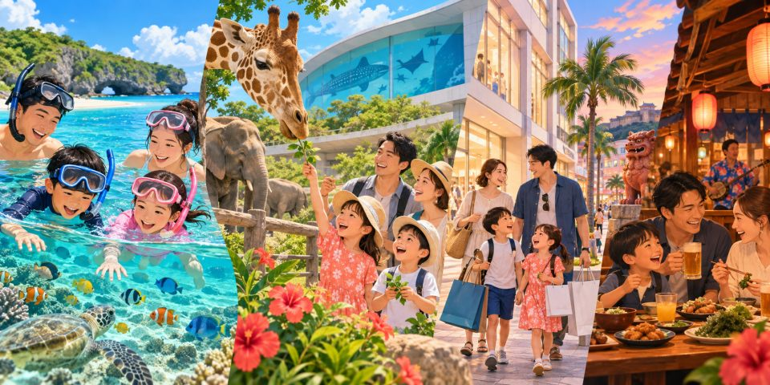

きじむなぁ ウミカジテラス店 3.49
きじむなぁ ウミカジテラス店 · 沖縄県 豊見城市瀬長174-6 ウミカジテラスオムタコ。1日目ウミカジ昼食の基本候補。
駐車：島の来訪者用駐車区画を利用し、徒歩移動の余裕を確保。
3泊4日 · 家族旅行
海・水族館・買い物を、子どもも大人もゆったり楽しむ

DAY 1 · 10月8日
初日は無理をせず、西海岸でゆっくり過ごす
入国審査・荷物受け取り後、レンタカーの送迎バスへ
チャイルドシート、ETCカード、荷物の積載を確認
海を眺めながらタコライス。駐車場は無料
2階のモンベル・カルディへ。1・2日目のおやつと飲料水を購入
14:50出発夕景を見る日はプール・ビーチ休憩を16:30までに短縮。疲れていれば北谷へ移動せずホテルで夕食
ホテル16:45出発→17:35駐車・海岸到着を目標。那覇基準10/8日没18:09は北谷の参考値、雲・交通により異なります。夕景の後に夕食
7名では待ち時間が長くなる可能性があるため、18:30までの入店を目安に
夕景後の夕食はHAN’S・とんかつ太郎・KISEKI・MEXICOから一店、コーヒーはジバゴローステリーかサンフランシスコから一店だけ。Transitは宮城海岸へ場所を替える場合。浜屋・King Sideは日中営業のため夕景後には入れません。
韓国語の個人旅行記 · ウミカジ 2026.9.2 → · ライカム 2026.8.20 → · 駐車場 2026.9.24 →

DAY 2 · 10月9日
瀬底のシュノーケリング・絶景ピザ・水族館・古宇利島
水着を先に着て、濡れた道具用の袋を用意
朝食付き金曜の午前中に移動し、混雑と午後の水の濁りを避ける計画
有料駐車場を利用し、施設の営業と波の状況を先に確認
09:00〜10:30は準備と海の体験を含む仮の時間です。母親と子どもは同じ浜で砂遊び・休憩、残りの大人5名のみ参加を確認。ガイドツアーか海辺の水遊びか、予約・集合場所・用具の有無は未確定。5歳児は保護者がすぐそばで見守り、ライフジャケット・マリンシューズ必須
無理な入水はしないシャワー5分¥500は旅行記の参考値。500円硬貨と100円硬貨5枚を用意し、シャワー・着替え・駐車場への移動に30分確保
出発前に花人逢とfuuを選択。花人逢は11:40までに入店できる場合のみ。長い待ち時間なら近隣のテイクアウトも検討
ナビでルート確認花人逢は絶景ピザ、fuu cafeは海ぶどう・アグー豚の丼
12:45食事終了を目標駐車・徒歩移動を含めた到着目標。大水槽を見学。15:00イルカショーを選ぶなら14:40劇場へ、給餌を選ぶなら水槽に残る
同じ15:00のため両方は不可。イルカショー約20分、給餌は当日変更の場合あり
任意の予定：水族館を15:40までに出発でき、子どもの体調が良い場合のみ。遅れたら省略し、訪問時は17:10にホテルへ出発
ホテル近くの予約したお店で一日を締めくくる
昼食は花人逢・fuu・キャプテンカンガルー・ステーキマンの一店に置き換え。遅れたら古宇利省略。水族館後は古宇利か備瀬を一つ選び、Bise Style・薪火燈を連続追加しない。
韓国語の個人旅行記 · 瀬底 2026.9.21 → · 美ら海 2026.9.10 → · 入場 2026.8.28 →
波が高い、または施設が営業していない場合はシュノーケリングを中止し、fuu cafeの開店前に美ら海水族館を先に見学します。無理な入水はしません。

DAY 3 · 10月10日
万座毛・塩工場・動物園のあと、那覇で買い物
雨に備え、傘と薄手の上着を手荷物に入れる
朝食付き荷物を車に積み、陸上の観光へ
強風や雨がひどい場合は景色を短時間だけ見て、すぐ移動
屋内ショップと施設を見学。塩作り体験は時間の都合で見送る
天候と子どもの体調に合わせ、動物園とワンダーミュージアムを選択
13:30出発食べログ百名店2026選出。タコス・タコライスとキッズメニュー
16:00ごろに宿へチェックイン・荷物を預ける
日本ブランドと食品売り場で買い物。イッセイミヤケの取り扱いは現地で確認
日用品とお土産の買い物
沖縄料理とお酒を楽しむ。7名なので予約を推奨
ブセナを選ぶなら10/10運航確認後に万座毛・Galaを省略、バンタカフェなら基本の観光時間を短縮。北部のDINO恐竜PARKをこの日のこどもの国と一緒に追加しない。
Gala近くのバンタカフェは観光を一つ短縮する場合、コザではチャーリー＋Brown Rollの持ち帰り程度。浦添・宜野湾は食事・カフェを一店だけ選びリウボウを短縮。夕食代案は既存予約を変更して選択。

DAY 4 · 10月11日
大人2名は先に空港へ、残りの5名は那覇で昼食
荷物と各自の便を確認し、先に移動
この組が引き続きアルファードを使用
波上宮または国際通りを短く散策
予約不可のため、開店時間に合わせて訪問
給油後、送迎バスで空港へ
搭乗手続き・免税店・おやつ購入
ZE632 · 17:35到着予定
ジャッキーが混むならさかな大統漁を事前選択、または近場の持ち帰りへ。11:20までの着席可否で待ち時間の打切りを判断。返却場所までの実際の移動・給油時間から12:10返却に間に合う出発期限を逆算し、遅れたら別の人気店へ移動せず持ち帰り・空港での食事に切替。浦添のカフェ・糸満市場・屋宜家は帰国日に追加しない。
遠出せず、予定のルート上で30〜60分休める選択肢
買い物中に子どもが疲れたら、一組がフードコートや屋内キッズスペースで休み、もう一組がモンベルとスーパーへ行きます。
アンチ浜は遊具公園ではなくシュノーケル候補でした。基本案は母親と5歳児が同じ瀬底ビーチで日陰・砂遊び・カフェ休憩、大人5名は予約体験に参加。アルファード1台を共用するため別の送り迎えの遠出はしません。入水しなくても波から離れ、子どもだけで水際へ行かせない。
水・帽子・着替え・日陰を確保し、トイレ・カフェ営業を当日確認。強風・暑さ・雨や待機場所不足なら体験短縮または全員水族館へ。事業者がアンチ浜など別の場所に変更する場合、集合・駐車・母子待機場所を先に確認。
水族館後に時間があればP7と水族館の間のちびっことりでへ。雨やネットが濡れると利用中止の場合。古宇利・備瀬のどちらかを選ぶならこの遊び場は省略。 公式利用状況
動物より遊びが好きなら、ワンダーミュージアムや小型遊具の時間を増やします。施設内なので追加の移動はありません。
昼食前に時間がある場合だけ、海辺の公園で20〜30分。雨や暑さが厳しければそのまま飲食店へ向かいます。
※当日の営業時間や施設の状況を確認して利用する、気軽な代案です。
64 / 64 件
確認できた64店を絞り込めます。住所・支店の確認が必要な候補は下部に別掲。地図と評価は各カードから確認できます。
64店舗 · 各時間帯に食事・カフェを一店だけ選択。すべてを追加する予定ではありません。点数・営業情報は2026.9.27確認、点数よりルート・待ち時間・7名の席を優先。
花人逢 — 1人¥1,000~1,999。予約不可・現金。火・水休み、11:30から。7名同席・子ども向けメニュー・駐車状況は現地確認。長い待ち時間なら別の店のテイクアウトへ。 食べログ詳細 · Googleマップ →
オーシャンBoo！恩納村店 — 夕食1人¥3,000~3,999。17:00~22:00、L.O.21:30。大人6名＋5歳児1名と席の種類を予約時に確認。90分制・連絡なし15分遅刻で自動取消の案内。近隣有料駐車場。 食べログ詳細 · Googleマップ →
居酒屋 てぃーだんぶい 那覇国際通り店 — 掲載予算1人¥3,000~3,999（注文により増加）。17:00~00:30、料理L.O.23:30。予約人数に子どもを含め、7名同席を依頼。全席禁煙・子ども可・専用駐車場なし。 食べログ詳細 · Googleマップ →
ジャッキーステーキハウス — 掲載予算1人¥2,000~2,999（注文により増加）。11:00~22:00、水曜休み・予約不可。子ども可、駐車10台の案内。帰国日は11:20までに着席不可なら待機打切り、実際の移動・給油を逆算して12:10返却優先。 食べログ詳細 · Googleマップ →
2026.9.27確認。1人予算は食べログの目安で、子どもの料金や総額を保証しません。当日の営業・席・駐車は店舗に再確認してください。
タコライス・オムタコ、1日目の軽い夕食の代案。
駐車：美浜公共駐車場から徒歩、区画・閉門時間を確認。
手軽なステーキの代案。美浜店とは別支店、モール営業・L.O.を確認。
駐車：店舗・モール利用者の駐車条件を確認。外部観光だけの無断利用は禁止。
ステーキ・海の眺め。21:00まで、月火休・予約不可、チップ制を確認。北谷の夕景の代わりにマリーナを選ぶ場合。
駐車：駐車場あり。入口案内・当日の入場条件を確認。
海沿いのカフェ・夕食。夜17:00~22:00、火日休。宮城海岸の夕景に替える場合、7名予約を確認。
駐車：海岸の駐車許可区画のみ。浜屋前の道路は駐車禁止、路上の空きを保証しません。
ステーキ。11:00~21:00（料理L.O.20:30）。アメリカンビレッジの夕景後の夕食候補。
駐車：駐車場あり。建物・公共駐車場の区画と条件を確認。
とんかつ。11:30~21:15の案内。夕景後の夕食の代案、最終注文は当日確認。
駐車：駐車場あり、アルファードの区画幅を確認。
ステーキ。11:00~00:00（L.O.23:00）、予約不可・カード不可の案内。既掲載のイオン北谷店とは別店舗。
駐車：13台の案内、店舗区画を確認。
そば。水曜休の案内。公式案内の夜L.O.20:00は食べログと異なるため当日確認。
駐車：駐車場あり、利用可能な区画を確認。
タコライス。11:00~22:00（L.O.21:30）。頂いた美浜の住所ではなく、現掲載の伊平店で確認。
駐車：駐車場あり。地図で現住所の店舗を確認。
ピザ。11:00~21:00、水休。夕景後の軽食・持ち帰り候補。
駐車：駐車場あり、宿泊者専用区画と区別。
ブランチ・夕食の代案。11:00~20:30の案内、早朝営業は未確認。砂辺への別移動が必要。
駐車：駐車場あり、台数未確認。
タコス。10:30~20:00、水休・予約不可。頂いた宜野湾伊佐の住所は移転表示、現北谷店で夕景後の夕食の代案。
駐車：現店舗の駐車は未確認。店舗に問い合わせ、許可区画のみ利用。
コーヒー。07:00~22:00、150席の案内・全席禁煙。夕景後の家族休憩候補、WORKSとは別店舗。
駐車：駐車場あり、ホテル専用区画と区別、または公共駐車場から徒歩。
コーヒー。08:00~19:00、全席禁煙。支店未指定のため北谷店を選択、夕景前後の短い訪問（遅い夕食後は閉店の場合）。
駐車：駐車場あり、美浜公共駐車場から徒歩も候補。
コーヒー。木曜08:00~01:00の案内。夕景後のカフェ候補、子どもと喫煙テラスを避ける。
駐車：駐車場あり、美浜公共駐車場から徒歩も候補。
バーガー・昼食の代案。09:00~17:00、夕食不可・予約不可。
駐車：駐車場あり、台数未確認。
そば。10:00~17:30（L.O.17:00）、予約不可・現金。夕景後の夕食には遅いので昼食を変更する場合のみ。
駐車：店舗横2台＋第2駐車場7台の案内。満車時は路上駐車しない。
餅・甘味。11:00~19:00、水休。日中に北谷へルートを替える場合、夕景優先なら省略。
駐車：7台の案内、短い持ち帰りでも店舗区画を利用。
かき氷。12:00~19:00（水は14時まで）。日中の宮城海岸訪問の代案、夕景の時間を削らず持ち帰り・短い休憩。
駐車：専用駐車場なし。近隣の公共駐車場の許可区画を確認。
コーヒー。09:00〜日没の案内。1日目夕景散策の持ち帰り候補、日没後はローステリー店へ。
駐車：駐車場あり、美浜公共駐車場から徒歩も候補。
コーヒー。08:00~22:00。支店未指定のためライカム周辺店を選択。1日目の買い物を短縮して屋内休憩に替える場合。
駐車：駐車場あり。モールの駐車場を外部カフェ用に使わない。
コーヒー・ブランチ。08:00~14:00、水木休の案内。10/8木曜は基本案から除外、3日目の観光を短縮して北谷ブランチに替える場合のみ。
駐車：駐車場あり、台数未確認。
2日目昼食の基本候補、11:40までに入店できる場合のみ。現金・予約不可。fuuと連続訪問しない。
駐車：混雑・徒歩時間を考慮し、区画未確認なら店舗案内を確認。
島内の昼食代案。11:00~14:30、水木休。公式観光案内は昼予約不可・夜予約可を区別。瀬底を離れる前に選択。
駐車：20台の案内、島内の路地・店舗進入路を確認。
そば。シュノーケル中止または昼食変更候補、待ち時間・現金・売切れを確認。
駐車：駐車区画未確認。市場周辺の許可された駐車場を確認して徒歩。
そば。古宇利島を選んだ日のみ短い休憩。16時台の食事可否・L.O.を確認。
駐車：駐車案内に従い、古宇利17:10出発を維持。
海のカフェ。遅い古宇利到着では閉店の場合。確認できたらソラハシの代わりに一店のみ。
駐車：駐車区画・現営業は未確認、当日問い合わせ。
バーガー。11:00~17:00（L.O.16:30）、16時以降は持ち帰りのみ・予約不可。瀬底から南へ戻るため花人逢の代わりに選び、長い待ちなら省略。
駐車：約40台の案内。入口と店舗区画を確認。
ステーキ。11:00~21:00（L.O.20:30）、現金・予約可。2日目の昼食を置き換え、水族館13:20目標を維持。
駐車：駐車場あり、台数未確認。
カフェ。09:00~16:00、予約不可。16:30古宇利訪問後では遅い。海の予定を取消し水族館を午前にする日の昼食・カフェ代案のみ。
駐車：駐車場あり、台数未確認。
カフェ。11:00~18:00。2日目の水族館後に古宇利の代わりに備瀬の散歩・カフェを一つ。食べログは火土休、観光案内と曜日が異なり要確認。
駐車：駐車場あり、集落の路地の進入・駐車条件を確認。
焼鳥・居酒屋。10/9金曜は夜のみ17:30~23:00。備瀬で夕食なら恩納19:00の予約を事前変更し、ホテル帰着が遅くなるため基本案に追加しない。
駐車：10台の案内、7名の席予約・禁煙席を確認。
しゃぶしゃぶ。2日目19:00予約夕食候補。他店を選ぶ場合は既存予約を先に変更。
駐車：近隣有料駐車、7名の席・駐車を店舗へ確認。
タコ料理。11:00~15:00／17:00~21:00。2日目のホテル周辺夕食の代案（既存予約を取消・変更した場合のみ）、臨時休業を確認。
駐車：駐車場あり、店舗区画を確認。
海のカフェ。週末08:00から、L.O.日没。3日目Gala近く、万座毛・コザの甘味など一つを短縮する場合の短い休憩。
駐車：77台＋近隣駐車の案内。指定区画を利用し、宿泊者用と区別。
パンケーキ。08:00~16:00（L.O.15:00）、10席・予約可。3日目Galaへ向かう途中で観光を一つ短縮、2日目の遅い夕食不可。
駐車：駐車場あり、7名の席予約と駐車を確認。
ゴーヤーバーガー。チャーリーの代わりの軽食、こどもの国から東へ向かう場合のみ、カフェを追加しすぎない。
駐車：狭い駐車との旅行記があり、アルファードの進入・区画を当日確認。
タコス。11:00~17:30、木休（祝日例外）、売切れ早仕舞い。3日目の基本昼食、予約は持ち帰りのみ。
駐車：案内の市営駐車場・BCコザ有料区画を確認。路上で待機駐車しない。
ベーカリー。平日08:00~17:00／週末11:00~17:00。3日目チャーリーの食事前後の短い持ち帰り候補。
駐車：専用駐車場なし。コザで駐車して徒歩でまとめる。
ラーメン。11:00~00:30、101席・予約不可。3日目の那覇への移動で昼食・夕食を置き換える場合、カフェと連続追加しない。
駐車：駐車場あり、アルファードの区画を確認。
海産物。11:00~18:30。ハッピーモアと同施設、3日目那覇への移動でチャーリーの代わりに食事＋短い買い物へ変更する場合。
駐車：施設共用無料200台の公式案内。食事と市場を一度の駐車で。
バーガー。06:00~02:00、朝食は11:00まで。3日目那覇への移動中の軽食・持ち帰り候補、帰国日に北への迂回は避ける。
駐車：100台の案内、注文方式と駐車区画を確認。
鶏・卵料理。平日11:00~22:00、週末07:00から。3日目那覇へ下る途中の食事変更、PARCO CITY店と区別。
駐車：駐車場あり、台数未確認。
鶏・卵料理。2階フードホール（頂いた3階を訂正）、10:00~22:00。3日目の雨で買い物先をPARCO CITYに変更する場合。
駐車：モール共用駐車場。7名はフードホールの席を先に確保。
パン・イタリアン。11:00~22:00。支店未指定のためルート上のPARCO CITY店を選択、買い物先を変更する場合のみ。
駐車：モール共用駐車場、階・入口の場所を撮影。
コーヒー・豆。港川で持ち帰り中心（室内ベンチ1台）、7名の席は期待しない。店舗案内11:00~18:30と他表記が異なり要確認。
駐車：店前2台。他店区画は使用せず、共用駐車の可否を確認。
フルーツタルト。11:30~19:00、火休の案内。3日目那覇移動中のカフェを一つ選ぶ場合、持ち帰り活用。
駐車：3台の案内。港川の狭い路地で駐車探しに時間を使いすぎない。
カヌレ。11:30~18:00、売切れ終了。港川で甘味店を一つ選ぶ、帰国日の追加迂回は非推奨。
駐車：専用駐車場なし。許可された共用・コイン区画を確認して徒歩。
アイスクリーム。10:00~22:00。支店未指定のため那覇移動ルートの本店を選択、食後の短い持ち帰り候補。
駐車：駐車条件未確認。公式店舗案内・現地表示を確認。
ベトナム料理。11:00~15:00／17:30~21:00、月・第1火休。3日目チャーリーの代わりに昼食を選ぶ場合、7名予約と階段移動を確認。
駐車：専用駐車場なし。近隣許可区画を確認し、路上降車で交通を妨げない。
3日目19:30夕食の基本候補。子どもを予約人数に含め、7名同席を依頼。
駐車：専用駐車場なし。宿に駐車して徒歩がおすすめ。
うなぎ。居酒屋の代わりの比較的高価な夕食。詳細住所・予約・営業は食べログで再確認。
駐車：専用駐車は未確認。国際通りの宿から徒歩可否を確認。
うなぎ。水休、昼11:00~15:00／夜17:00~22:00、予約可。国際通り徒歩圏ではないため夕食予約と車移動を変更する代案。
駐車：5台の案内、7名同席と駐車を予約時確認。
そば。11:00~20:00（L.O.19:30）、売切れ早仕舞い・TableCheck予約の案内。19:30の居酒屋の代わりなら早めに入店。同住所のTsuboya店と区別。
駐車：専用駐車場なし。宿から徒歩または近隣コインパーキング。
ラーメン。平日10:00~02:00、週末09:00~02:00の案内・予約不可。国際通り夕食の代案、7名同席の保証なし。
駐車：専用駐車場なし。宿に駐車して徒歩がおすすめ。
まぜ麺。土曜11:30~21:30／日曜21:00まで、予約不可。国際通り夕食の代案、子どもの辛味・メニューを確認。
駐車：専用駐車場なし。移転後の1-3-34で検索。
鉄板ステーキ。夜17:00~22:00、コース予約・7名席を確認。3日目居酒屋の代案、コースなので帰国日の短い昼食には非推奨。
駐車：専用駐車場なし。国際通りの公共・コイン駐車場または徒歩。
海鮮定食。水〜日10:00~21:00、予約不可・現金。4日目ジャッキーの代わり、港方面の迂回・待ち時間を含め出発期限厳守。
駐車：駐車場あり、台数未確認。
ステーキ。11:00~22:00、水休・予約不可。帰国日の基本候補。11:20までに着席不可なら待機打切り。給油・返却ルートを逆算して12:10返却を守り、必要なら持ち帰り・空港の食事へ。
駐車：正面10台（軽1台含む）、提携駐車場なし。他店の区画利用は禁止。
車えび料理。11:30~18:00、火水休・予約不可。東海岸の宜野座のため現ルートに追加せず、観光を一つ省き昼食を変更する遠回りの代案。
駐車：駐車場あり、台数未確認。
複数店舗の海鮮市場。平日09:00~18:00、週末09:00~19:00。1日目のウミカジ昼食の代わりに空港南へ迂回、帰国日の追加訪問は非推奨。
駐車：駐車場あり、市場共用区画を確認。
そば。11:00~15:15、火休の案内、予約可。南部八重瀬への遠出。1日目ウミカジの代わりならライカム・チェックインを再計算。帰国前に無理に追加しない。
駐車：駐車場あり、台数未確認。
カフェ。平日11:00~17:00／週末10:00~18:00、水木休。東海岸の金武への遠出、1日目は除外し別の観光を省くルートのみ。
駐車：近隣無料公共駐車場の案内。出入口・許可区画を確認。
KING TACOS 大山 — 宜野湾市大山1-24-10 · 頂いた住所の支店は未確認、他店の点数は付けていません。
Chingones 宮城 — 北谷町宮城3-51 · 該当北谷店の食べログ・駐車・営業は未確認。金武・コザ店と区別。
オブリガード 北谷 — 北谷町北谷2-17-44 · 頂いた住所は未確認。旧美浜店は閉店表示のため現推薦には含めていません。
Yakiniku Tachibana 牧志 — 那覇市牧志2-11-1 · 店名・住所の組合せは未確認。見つかった鏡原店へ勝手に置き換えていません。
Orion draft beer — オリオンドラフトは特定の店でなくビール商品として確認。飲食店カード・点数は付けず、運転者は飲酒しません。 公式商品
駐車場「あり」は空き・無料・アルファード適合を保証しません。実際の入口・料金・区画表示を優先。
すべて追加で訪れるリストではありません。基本日程の訪問先を一つ入れ替えて選んでください。
基本案は施設・母子待機場所を確認しやすい瀬底ビーチ。以下はガイド・波・流れ・集合場所を確認して変更する候補で、「波が高いから別の浜に入水」の案ではありません。母親・5歳児は不参加が基本。
水族館近くの備瀬崎はフクギ散策と組み合わせる北部候補ですが、地点別の流れ・潮時・監視・駐車条件は未確認。ガイドが同行と当日の可否を確認した場合のみ2日目午前の海体験を置き換え、水族館後に追加シュノーケルは入れない。母子はフクギ散策か事業者が確認した休憩場所へ。
ライフジャケット・バディ同行・当日の天候海況と事業者判断を優先。一人で入水せず、飲酒後に参加しない。個人旅行記・SNS映像は撮影時の記録で、安全や現在の入水許可の根拠ではありません。
頂いた4投稿は本文アクセス制限で内容未確認、原文リンクのみ保存。
水族館15:00の選択プログラム後、古宇利島の代わりに近くの備瀬フクギ並木を30~45分の短い散歩へ。Bise Styleを選ぶなら散歩をさらに短縮、薪火燈の夕食は恩納の予約を事前変更した場合のみ。古宇利＋備瀬＋カフェを全部追加しない。
生活集落のためアルファードは外側の許可駐車場に停め徒歩で入る。無料・有料が混在するので料金を現地確認、路地・住民区画へ進入しない。
名護中山のDINO恐竜PARKはシュノーケルをしない日の午前の海予定全体を置き換える候補。基本の海＋水族館＋古宇利に追加しない。母子だけ行くには別の車と帰路の確保が必要で、車1台の基本案では全員で変更。
09:00~18:00、最終入場17:30、散策約30~40分。大人¥1,000・4~15歳¥600、母親＋5歳児¥1,600／大人6名＋子ども¥6,600。屋外の森なので台風・大雨の代案ではありません。名護店共用駐車100台の案内、無料かは未確認。
2026.9.27確認の公式休業予定に10/9が含まれるため2日目には入れません。 10/10朝に公式運航を確認し、万座毛・Galaを省いてブセナを選ぶ代案のみ。ホテルから北上後こどもの国へ南下するので車・駐車・徒歩・乗船待ちを含め再計算し、遅れたら動物園を短縮。
4~10月のボート09:10~17:30、約20分。大人¥1,560・4歳〜中学生¥780（5歳有料）、母子¥2,340／大人6名＋子ども¥10,140。7名は現地先着、欠航・取消条件を確認して購入し、割引券は返金条件も確認。
無料駐車約200台、乗り場まで徒歩約10分または無料シャトル。ベビーカーは乗船不可、浮桟橋を歩く。展望塔は急な螺旋階段50段、子ども・年長者の体調を考慮。欠航なら別の海体験を強行しない。
当日の運航・休業確認 → · 公式料金 · 公式ホームページ · グラスボート乗り場の地図
万座毛施設の無料駐車場を利用し、展望区域の観覧料（大人¥100）は別。駐車後は子どもと施設の歩行動線へ、ブセナを選ぶ日は万座毛を省略。
イオンモール沖縄ライカムとイオン北谷店は別施設。ライカムのモンベル・カルディ買い物後にイオン北谷の買い物まで追加しない。イオン北谷の飲食店を選んだ場合のみ利用者の駐車条件を確認し、アメリカンビレッジ観光は公共駐車場区画を利用。
追加観光地の料金・交通費は元の予算に含みません。選んだ施設の料金を加え、省いた施設の料金を引いて計算。
基本の予定を保ち、待ち時間と天候に合わせて選択
美ら海水族館に到着したら、「黒潮の海」大水槽横のカフェ「オーシャンブルー」入口の券売機で、まず待ち時間を確認します。
15:00の選択プログラムに間に合うよう、13:50までに入店できる場合のみ利用します。呼び出しが遅い、または待ち時間が長ければ無料席や通常の水槽見学に変更します。
今帰仁の森は森の中の雰囲気を楽しめる沖縄そば店。鶏・豚・かつおを組み合わせた出汁とセットメニューが特徴です。
通常の予定では瀬底を出発する前に花人逢かfuuを選び、待ち時間と引き返しを減らします。
花人逢は丘の上からの海の景色と焼きたてのピザが魅力の人気店です。
シャワー・着替え後、11:00出発を目標にします。fuu cafeは瀬底島内、花人逢は本島側のため、出発前に各ルートを確認してください。花人逢の入店が11:40を過ぎそうなら近隣のテイクアウトも検討。fuuへ戻る場合は移動時間を再計算し、昼食が遅れたら古宇利島を省略します。
2026.9.27確認 · 10/8〜11の天気はまだ確定しません。気象庁の週間天気予報は7日先まで。長期の気温見通しは、特定日の雨や風を確定する情報ではありません。
沖縄本島地方の天気・週間予報 → · 那覇・本島北部の雨と風を確認
沖縄本島地方の警報・注意報 → · 訪問地域の強風・波浪注意報を確認
沿岸波浪実況・予想図 → · 沖縄本島西側の海域を確認
台風情報 → · 進路と影響する時間を確認
10/9の瀬底は暫定プランです。出発48時間前に再確認し、当日の朝にビーチ・ツアーの営業を確認します。波・警報や運営者の判断で中止となったら、水族館を先に見て屋内での休憩を増やします。晴れていても入水できるとは限りません。他のビーチへ自己判断で移動してシュノーケリングはしません。
3日目のホテルチェックアウト・那覇での宿泊・予約した食事は固定し、屋外の訪問先を天候に応じて調整します。2日目と3日目を丸ごと入れ替えることはしません。
10/10に強風や大雨なら万座毛を省略し、沖縄こどもの国の屋内体験や買い物へ。10/11に雨・交通遅延があれば散策を省略し、レンタカー返却と空港移動を優先します。
地図では店だけでなく実際の駐車場入口まで確認。「駐車あり」は無料・空き・大型車適合を意味しません。
コザの食事・Brown Rollは一度駐車して徒歩でまとめる。港川のカフェは2~3台または専用駐車なしの店もあるので車で巡らず一店だけ。那覇の宿に車を置き国際通りの食事を徒歩にすると店ごとの駐車料金を抑えられる。
コイン駐車の時間帯料金・最大料金の適用時間・繰返し適用・入出庫時間を確認。車の実寸の高さ・長さ・幅をレンタカー契約で確認し、機械式・高さ制限へ無理に入らない。4日目は駐車待ちが長ければ食事を諦め返却・空港へ。
10月の予定に含まれる施設を掲載。為替・アプリのクーポン・在庫により韓国での販売価格が変わるため、決済直前に比較してください。
観覧料は1名¥100、未就学児は無料。大人6名で計¥600のため、事前割引のメリットは小さく、天候と予定に合わせやすい現地購入が便利です。万座毛の公式料金
予算表の入場料は、大人6名で美ら海¥13,080＋沖縄こどもの国¥6,000＋万座毛¥600として計算しています。事前券を買った場合は実際の支払額に合わせて調整します。
国内出発前の購入比較：公式の大人6名合計は水族館¥13,080・こどもの国¥6,000・万座毛¥600、計¥19,680。5歳児はこの3施設で無料なので大人券6枚を比較。WAUGの水族館商品にはアプリ会員2%クーポンの案内がありますが、条件・為替・手数料を含む6枚の最終額を確認。最安表示は子ども向けの場合があります。この商品は購入後28日有効・変更と返金不可の案内のため、旅行日と販売条件を決済直前に再確認してください。 WAUG
大人6名＋子ども1名 · 航空券・宿泊費・レンタカー代は除く
美ら海水族館：大人6名¥13,080＋沖縄こどもの国：大人6名¥6,000＋万座毛：大人6名¥600で計算。5歳児は無料の前提。シュノーケリング用品、買い物、お土産は別途です。
母子の休憩案では大人5名だけが上記ツアーに参加すると¥32,500〜、元の総予算との合計¥160,500~200,500〜。下記の7名全員参加の比較額と区別し、実際の参加人数で予約してください。
比較 · 7名全員参加の場合のガイドツアーは別途：公式バナナボート＋シュノーケル商品は大人¥6,500〜・4〜11歳¥6,000〜。大人6名＋5歳児1名で¥45,000〜。上記予算に加えると¥173,000~213,000〜です。用具の重複・追加オプションは要確認。日付・人数・取消条件・集合時間を確認して予約してください。 公式ツアー・料金
瀬底ビーチでは施設の営業、波の状況、監視員の指示を優先します。5歳児はライフジャケットとマリンシューズを着用し、保護者がすぐそばで見守ります。シャワー用の硬貨500円分を用意してください。
食べログの評価・営業時間は2026年9月の確認情報です。訪問直前に再確認してください。
出発前にパスポート・航空券・最初の宿の予約書を用意し、代表者のアカウントで登録します。
日本での住所には、最初の宿泊先であるリザンシーパークホテルを入力します。英大文字と数字を使用し、電話番号のハイフンは省略してください。
郵便番号を入力して住所の自動入力ボタンを押し、自動入力された内容が上記と一致するか確認します。
同伴家族のメニューで一緒に入国する家族を1名ずつ追加します。5歳児も個別のパスポート情報と入国情報が必要です。
代表者を含む7名それぞれの内容を確認してください。大人が個別のアカウントを作ることも可能ですが、一緒に手続きをする家族は代表者のアカウントで同伴家族として管理できます。
実際の訪問記4件を読み、今回のルートに合わせて取り入れました。訪問した季節・当日の体験と現在の営業情報は異なる場合があります。
2026年公開の3回訪問した方の旅行記では、駐車場からビーチまで徒歩約5分、砂・サンゴ・石でベビーカーが使いにくかった経験が紹介されています。駐車場への移動に余裕を確保し、子どもが海に入りたくなければ保護者と砂遊びだけでも楽しめます。
2025.7の家族旅行では、波が高く瀬底で予定していたツアーがゴリラチョップへ変更されています。運営者が判断した例です。集合場所・変更時の移動・シャワーの有無を予約時に確認し、終了が遅れたら古宇利島を省略します。旅行記のfuu cafeでの昼食も候補選びの参考にしました。
2025.12の未就学児連れの宿泊記には、屋内プールの浅いエリアとキッズルームの利用経験があります。初日に疲れたり雨が降ったりしたら、北谷への往復を見送り、ホテル内の食事と屋内休憩を選びます。現在の営業・料金はチェックイン時に確認します。
2025.3の10名旅行では、観光での待ち時間により夕食の予約時刻に遅れ、席が分かれた経験が紹介されています。7名でも、同じテーブル・子ども連れ・座敷かテーブルかの希望を事前に伝え、夕食の予約時刻から逆算して観光を短縮します。